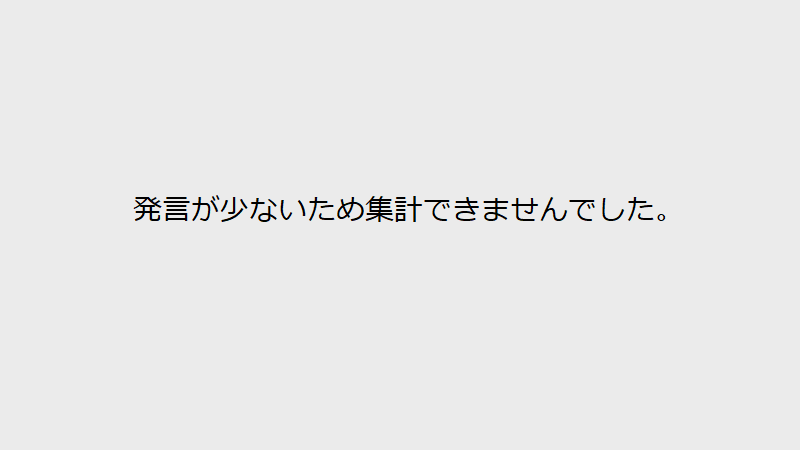

委員長、えり子、山谷、いか、主宰、動議、北朝鮮、年長、拉致問題、指名、有田、本、特別委員会、規則、規定、議事、院、項
発言が少ないため集計できませんでした。
…致問題等に関する特別委員会を開会いたします。本院規則第八十条第二項の規定により、年長のゆえをもちまして私が委員長の選任につきその議事を主宰いたします。これより委員長の選任を行います。つきましては、選任の方法はいかが…
…別委員会を開会いたします。本院規則第八十条第二項の規定により、年長のゆえをもちまして私が委員長の選任につきその議事を主宰いたします。これより委員長の選任を行います。つきましては、選任の方法はいかがいたしましょうか。…
御異議ないと認めます。それでは、委員長に山谷えり子君を指名いたします。─────────────〔山谷えり子君委員長席に着く〕
ただいまの有田君の動議に御異議ございませんか。〔「異議なし」と呼ぶ者あり〕
…ただいまから北朝鮮による拉致問題等に関する特別委員会を開会いたします。本院規則第八十条第二項の規定により、年長のゆえをもちまして私が委員長の選任につきその議事を主宰いたします。これより委員長の選任を行います。つきま…